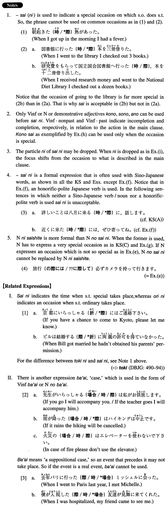

←
DoJG
→
際（に）
(I. 369)
Example sentences
(ksa).
詳しいことは八月に上京する
際に
、お話し致します。
I will tell you the details when I come down to Tokyo in August.
(ksb).
これは大学卒業の
際に
父が買ってくれたワープロです。
This is a word processor which my father bought me on the occasion of my college graduation.
(ksc).
私達の結婚に
際
して過分のお祝い物を頂き恐縮しております。
I feel much obliged to have received such an unmerited gift on the occasion of our wedding.
(a).
大阪に転勤する
際に
、妻子は東京に残した。
When I transferred to Osaka I left my wife and children behind in Tokyo.
(b).
激しい運動をする
際に
は準備運動が必要だ。
When you engage in strenuous exercise, you need to do stretch exercises.
(c).
首相はサミット会談に出席した
際に
国際収支に関する日本側の立場を説明した。
When the premier attended the summit meeting, he explained Japanese views on balance of international payments.
(d).
出発の
際に
は、わざわざ見送りに来ていただき、ありがとうございました。
Thank you very much for taking the time to see me off at the time of my departure.
(e).
旅行の
際に
は必ずカメラを持って行きます。
When I go on a trip I always take my camera with me.
(f).
近くにおいでの
際に
は、ぜひお立ち寄り下さい。
Please call on us when you happen to be in our neighbourhood.
(g).
日本の近代化の研究に
際
して日本の国立国会図書館を利用した。
At the time of my research on Japanese modernization I used the National Diet Library of Japan.
(h).
この
際
、私が直接社長に話してみます。
Since this is an important occasion (literally: on this occasion), I will talk directly to the president (and see what happens).
(i).
これは帰国の
際
ホストファミリーのお父さんがくれた腕時計です。
This is a wrist watch which my host family father gave me when I left for home.
Formation
(i)
Vinformal
際
(
に
)
{買う/買った}
際
(
に
)
When someone buys/bought something
(ii)
Nounの
際
(
に
)
試験の
際
(
に
)
At the time of examination
(iii)
Nounに
際
して
入学に
際
して
On the occasion of entering a school
(iv)
{この/その/あの}
際
この
際
On this occasion
